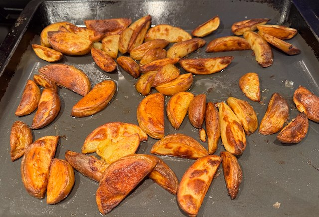
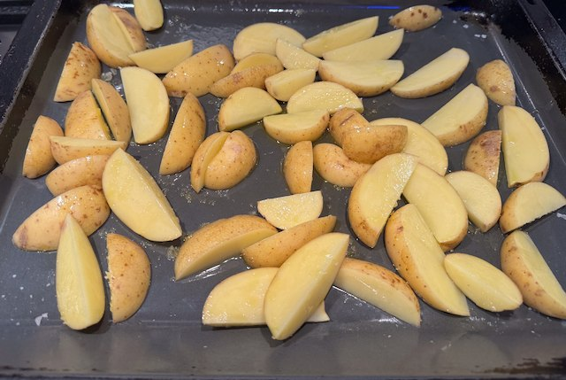

Serves: 4
Cook Time: 1 hour
Chunky Chips

Ingredients
- 2kg potatoes
- olive oil
- salt
Method
Cut the potatoes into wedges, and place on an oiled oven tray. Sprinkle with salt drizzle with olive oil. Flip around to coat with oil.
Cook in oven on 180°C fan for 45 min. Flip after 20 min and again near the end.
